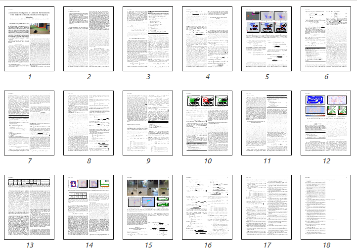
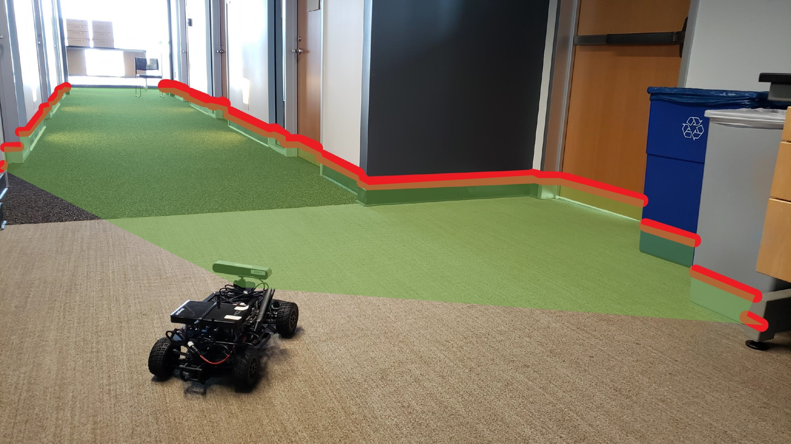
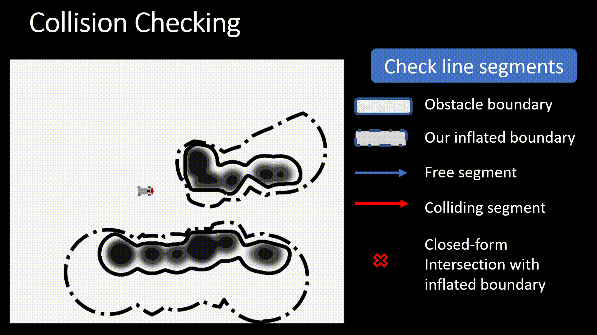

Autonomous Navigation in Unknown Environments with Sparse Bayesian Kernel-based Occupancy Mapping
Department of Electrical and Computer Engineering
University of California, San Diego
In Submission, 2020
|
This paper focuses on online occupancy mapping and real-time collision checking onboard an autonomous robot navigating in a large unknown environment. Commonly used voxel and octree map representations can be easily maintained in small environments but they have increasing memory requirements in large environments. We propose a fundamentally different approach for occupancy mapping, in which the boundary between occupied and free space is viewed as the decision boundary of a machine learning classifier. Our preliminary work developed a kernel perceptron model, which maintains a very sparse set of support vectors to represent the environment boundaries efficiently, and derived efficient collision checking algorithms. This work develops a probabilistic model, allowing robustness to measurement noise and localization errors as well as probabilistic occupancy classification, supporting autonomous navigation. The resulting sparse Bayesian map is updated via incremental Relevance Vector Machine training and supports efficient collision-checking of points and curves. The effectiveness of our mapping and collision checking algorithms is evaluated in tasks requiring autonomous robot navigation in unknown environments.
Paper
|  |
Thai Duong, Nikhil Das, Michael Yip, Nikolay Atanasov
Autonomous Navigation in Unknown Environments using Sparse Bayesian Kernel-based Occupancy Mapping
In Submission, 2020.
[pdf]
|
OVERVIEW AND RESULTS
ADDITIONAL DETAILS
Settings
|

|
A ground robot is placed in an unknown environment. Its tasks are to build a probabilistic occupancy map of the environment and plan a trajectory from the current position to a goal region in the free space. The map should be built online along the way and the trajectory is re-planned accordingly.
|
Map updates
|
|
Given a streaming local depth observation (e.g. lidar scan), we sample occupied and free points to generate a training dataset. The dataset is used to incrementally train a Relevance Vector Machine model and the resulting relevance vectors are stored as a map. Upon receiving new observations, the map as a sparse set of relevance vectors is updated.
|
Collision checking for linear and polynomial trajectories
|

|
Using the relevance vectors, we propose an "inflated boundary" of the obstacles. For line segments, the intersection with the inflated boundary can be computed efficiently in closed form regardless of the segment length. For polynomial curves, a safety ellipsoid is computed efficiently in closed form using the "inflated boundary". Collision checking is then performed by iteratively placing safety balls along the curves.
|
Code (TBD)
{kind=link}
{kind=link}
{kind=link}